The club
Member gallery
Our members, their boats, and their names on the message board.
 Billy AllisonBoater Bass Cat Pantera 3 - 200 Merc Opti Handle: "PSUFAN"
Eli AmilaniCCBM President Consultant and Banking Director, Boater , BassCat Pantera IV, Optimax 200 Handle: "Eli"
Billy AllisonBoater Bass Cat Pantera 3 - 200 Merc Opti Handle: "PSUFAN"
Eli AmilaniCCBM President Consultant and Banking Director, Boater , BassCat Pantera IV, Optimax 200 Handle: "Eli"
 Jason BaileyRider. Handle: Jhndrtxn
Jason BaileyRider. Handle: Jhndrtxn
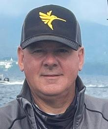
Rob BetchleyRider. 2019 Nitro Z21 / 250 Merc. Handle: rbetch
 Nick BiondiBoater, 2003 Pantera IV , 200 Merc Optimax. Handle: nick b
Nick BiondiBoater, 2003 Pantera IV , 200 Merc Optimax. Handle: nick b
 Sean ClarkRider. Handle: TLC
Sean ClarkRider. Handle: TLC
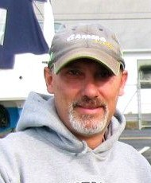
Lou CroceBoater 2002 Ranger 520 Merc Optimax 225 Handle: "Ranger 11" 2009 CCBM AOY 2010 CCBM AOY
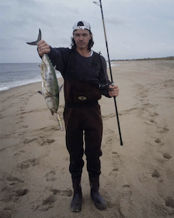
Pavlo FenikBoater, 99 Bullet XF20, 225 Yamaha Handle: pavloamyst
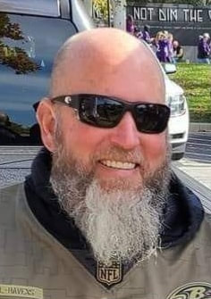
Rob GalushaBoater. 2022 Ranger 519c / 19 ft/ 225 Merc Pro XS. Handle: robgalusha
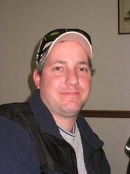
Sean GeerlofCCBM Treasurer & Webmaster, Boater 2018 Bass Cat Caracal, 225 Merc ProXS. Handle: "xmsean" 2011 CCBM AOY
 Paul GrayRider. Handle: Paulie G
Paul GrayRider. Handle: Paulie G
 Adam Harknessboater. Legend - Merc 250. Handle: adamh1007
James "Woo" HauckBoater - 99 Stratos 201 Pro Elite DC 225 Evinrude, Handle: Woo
Adam Harknessboater. Legend - Merc 250. Handle: adamh1007
James "Woo" HauckBoater - 99 Stratos 201 Pro Elite DC 225 Evinrude, Handle: Woo
 JC HenryBoater, Nitro. Handle: JC
JC HenryBoater, Nitro. Handle: JC
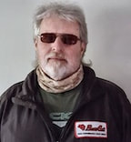
Stan HorneCCBM President, Boater 2004 Bass Cat Pantera III Dual Console 200 Merc Optimax, 24 Tempest Plus Handle: "basscat7" 2012 CCBM AOY
 Bob HorningBoater. 2019 Ranger Z520C, 20 ft, Mercury Pro XS 250. Handle: Bobh
Bob HorningBoater. 2019 Ranger Z520C, 20 ft, Mercury Pro XS 250. Handle: Bobh
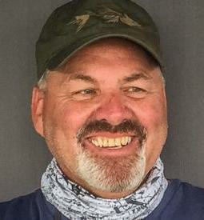
Ken JesterPhoenix 921 Elite Handle: KJ
 Glenn M. KmeczBoater, Ranger Z119 / 225 Mercury Pro XS Optimax. Handle: Glennk
Jacob MaennerRider/Boater . Tracker Grizzly 1860, 19' 2" - 90hp. Handle: jacobdmaennersr.
Glenn M. KmeczBoater, Ranger Z119 / 225 Mercury Pro XS Optimax. Handle: Glennk
Jacob MaennerRider/Boater . Tracker Grizzly 1860, 19' 2" - 90hp. Handle: jacobdmaennersr.
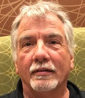
Steve ManistaBoater, Bass Cat Puma. Handle: stevem
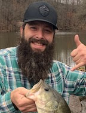
Rich MartinelliRider. Handle: RJMfishing
 Loren MeckleBoater: Ranger/20ft/200hp. Handle: Lunker79
Loren MeckleBoater: Ranger/20ft/200hp. Handle: Lunker79
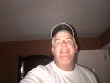
Sam MontaltoCCBM Secretary, Boater, BassCat Puma FTD, 250 Optimax. Handle: "Sam M"
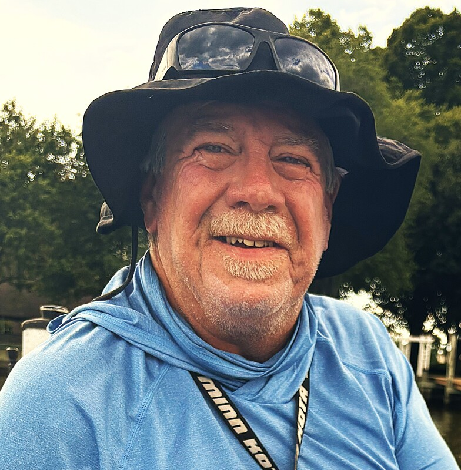
Chuck Nalerider. Handle: Coach Chuck
Travis NaleBoater. Ranger (21ft) - Mercury 250. Handle: Naleone
 Paul SirochmanBoater, 21 ft. Crestliner "the tank" Honda 90. Handle: PaulS
Paul SirochmanBoater, 21 ft. Crestliner "the tank" Honda 90. Handle: PaulS
 Stephan SirochmanBoater. 2005 Bass Cat Puma. Handle: stephansiroch
Jeremy SolnoskyRider. Handle: JSonolsky28
Stephan SirochmanBoater. 2005 Bass Cat Puma. Handle: stephansiroch
Jeremy SolnoskyRider. Handle: JSonolsky28
 Ryan Sweeneyrider. Handle: roysween224
Ryan Sweeneyrider. Handle: roysween224
 Aaron Turnerrider. Handle: Adturner
JW WadeRider, Handle: JW
Aaron Turnerrider. Handle: Adturner
JW WadeRider, Handle: JW
 Steve WeimarCCBM Tournament Director, Boater, Bass Cat Puma Mercury 250 ProXS, Handle: sdub
Steve WeimarCCBM Tournament Director, Boater, Bass Cat Puma Mercury 250 ProXS, Handle: sdub
 Joe WesleyRider. Handle: J.Wesley
Joe WesleyRider. Handle: J.Wesley
 Tom WoodBoater. Bass Cat
Tom WoodBoater. Bass Cat
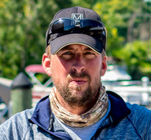
Tom YawRider, handle: yaw_fishin
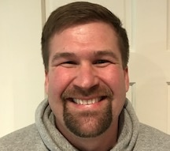
Steve ZiskBoater, Bass Cat Cougar, Mercury 250 ProXS, Handle: FishinDadMore photos are on the club Facebook page.